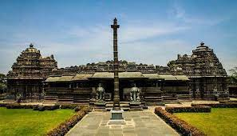
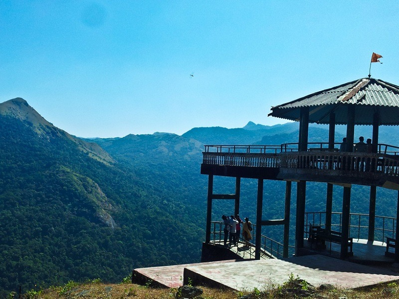
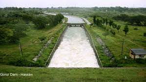
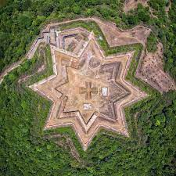
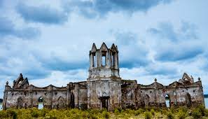
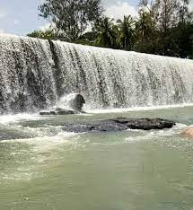

Hassan District is one of the 30 districts of Karnataka state located in the south-western part of Karnataka in India.
The district has had an eventful and rich history. In the past, it reached the height of its glory during the rule of the Hoysalas who had their
capital at Dwarasamudra, the modern Halebeed in Belur Taluk. The district, noted for its enchanting natural scenic beauty is also a veritable treasure-house
of Hoysala architecture and sculpture, the best specimens of which are at Belur and Halebeed. Shravanabelagola, in Channarayapatna taluk,
which is studded with Jain moduments, is a renowned centre of pilgrimage for the jains.
Like most of the other districts in the State, this district also derives its name from its headquarters town, Hassan. According to the Sthalapurana,
the name ‘Hassan’ is a contraction or derivative of ‘Simhasanapura’, associated with janamejaya, a great grandson of the Pandava hero, Arjuna.
But the popular belief is that the place is called Hassan after the goddess Hassan-amma or Hasanamba, the presiding deity of the local Hasanamba temple situated
in the old town area. Hasanamma or Hasanamba means, in Kannada, a smiling mother or goddess. In this connection, a traditional story, as to how the goddess
Hasanamba came to be established at this place, is narrated thus : The Saptamatrikas (seven mothers or goddesses), in the course of their journey from Varasasi
(Kashi) to the South, were pleased with the scenic splendour of this area and decided to make it their abode. Accordingly, of the seven mothers, who were sisters,
three settled at Hassan and another three in a tank called Devigere, also in Hassan proper, and were called Hasanamba, while the other one settled in a forest
near Kenchammana-Hosakote in Alur taluk and was called Kenchamba.
Hassan district lies partly in the “malnad” tract and partly in the southern “maidan”(plains) tract. By considering the physical aspects, climate, rainfall, etc.
the district may be divided into three regions, viz., (1) southern malnad, (2) semi-malnad and (3) southern maidan. western and north-eastern portions of the
Belur taluk, western and central parts of Alur taluk and the whole of Sakaleshapura taluk constitute the “southern malnad” region, the central parts of the
Arkalgud taluk, the western portion of the Hassan taluk, the eastern portion of the Alur taluk, the central and eastern parts of the Belur taluk and the
western parts of the Arasikere taluk form the “semi-malnad” region. The southern maidan region includes the whole of the Holenarasipura and Channarayapatna taluks,
eastern parts of the Arasikere and Hassan taluks and the south-eastern portions of the Arkalgud taluk. The southern malnad is a forest-clad hilly region with a
heavy rainfall.

Belur (also known earlier as Velapuri, Velur and Belapur in olden times) is situated on the banks of Yagachi River and was one of the capitals of the
Hoysala Empire. Renowned for its magnificent Hoysala temple complex, the Chennakeshava Temple (also called Vijaya Narayana Temple), which was built by
Hoysala King Vishnuvardhana to commemorate his victory over the Cholas.It is proposed to be listed under UNESCO World Heritage Sites.

This is a sprawling 40-hectare reserved forest area in Sakleshpur. Surrounded by the Western Ghats, Bisle Ghat is near the border of Hassan,
Kodagu and Dakshina Kannada districts. It has a scenic stretch of pristine reserve forest, mountain ranges, and trekking trails. The view from the Bisle
Ghat Viewpoint is truly spectacular. There are several hillocks like Pushpagiri, Kumara Betta, Yennikallu which are ideal for trekking.

Gorur is home to several Hoysala temples and one of the biggest reservoirs in Karnataka - Gorur Dam. At the entrance of Gorur, one can see the temple
dedicated to Lord Paravasudeva. A temple dedicated to Lord Yoganarasimha is built on the banks of Hemavati River and very close to the dam.
The dam is constructed across Hemavati River, which is an important tributary of the Cauveri River.

The Manjarabad Fort is located in Sakaleshpur and is constructed atop a hill, about 988 m above the ground-level. This fort was built by Tipu Sultan in
1792 with the aim to ward off enemy infiltrations from Mangaluru and Madikeri side. The unique aspect of this fort is that it is built in a star shaped design.
It has a form with 8 angular tips stretching in 8 directions with a plus shaped well at the centre.

The area around the church got deserted
after the construction of the Gorur Dam; as during the monsoon the region got flooded and the church used to get submerged. The fact that this church remains
submerged in water during monsoons makes it special as well as surreal at the same time. If you happen to visit the place during peak monsoon season,
only one-third of the chapel could be visible.

Rama devara betta, also known as Rama devara Katte in Hole Narasipura is an offbeat destination to visit while in Hasana district. This place is not to be
confused with Ramadevara betta in Ramanagara district. Rama devara katte is a scenic spot where the Hemavathi river tips over a stone wall to form a mini waterfall.
Water cascading over a 10 feet tall wall forms an eye catching sight.
{kind=link}
{kind=link}
{kind=link}
{kind=link}
{kind=link}
{kind=link}
{kind=link}
{kind=link}
{kind=link}
{kind=link}
{kind=link}
{kind=link}